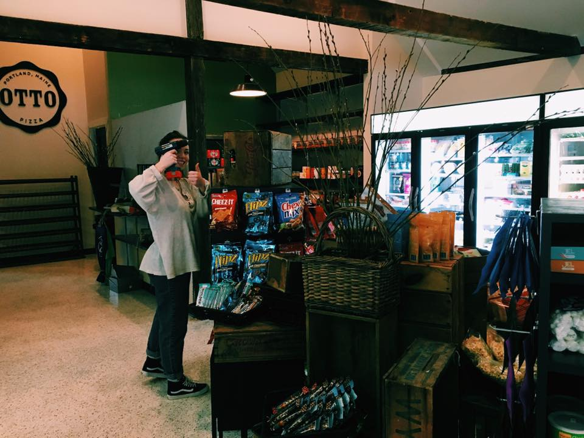
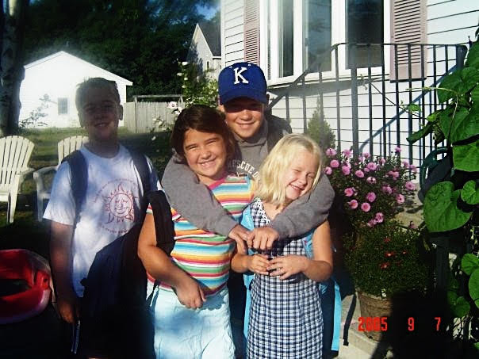

Hello! As you already know from my homepage, I am a sophomore at the University of Maine. My major is marketing, and I minor in communications. Along with that, I hope to get my certification through the New York School of Art and Design for interior design. I plan to do something within the world of design for a career.

My friend Eva and I job shadowed with a local designer who was re-designing the inside of Handy Andy's in Yarmouth!
I am the youngest of four. I have two older brothers Henry and Phil, as well as a sister Annie. Both of my brothers are in the service, Henry is in the Army and Phil is in the Navy Reserve. Henry is currently in Korea and Phil spends most of his time working on a steamship on Lake Erie. My sister Annie is getting her degree in nurition and dietetics, we love to cook together. Aside from my siblings I have two dogs, Clyde and Rosie. They're super cute!

Here's a throwback from '05!
Enjoy exloring the rest of my page!
links to Home Page My Hometown My Favorite Things